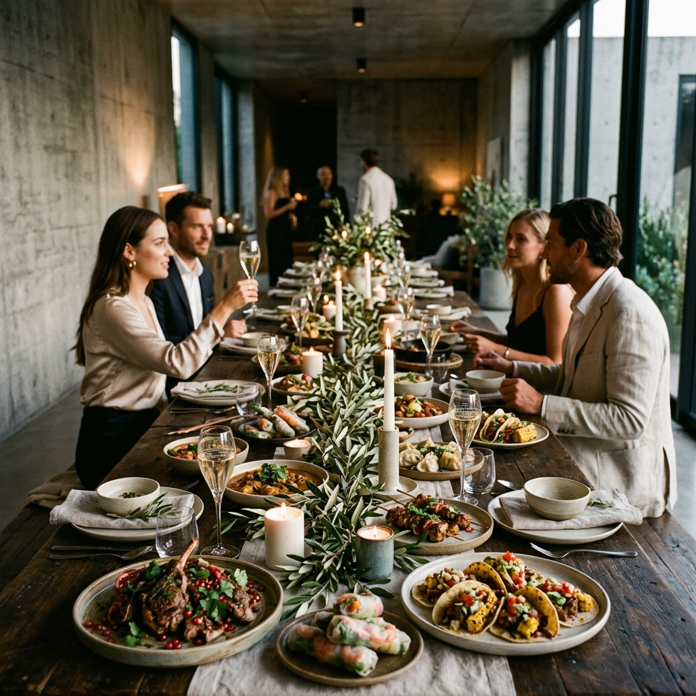
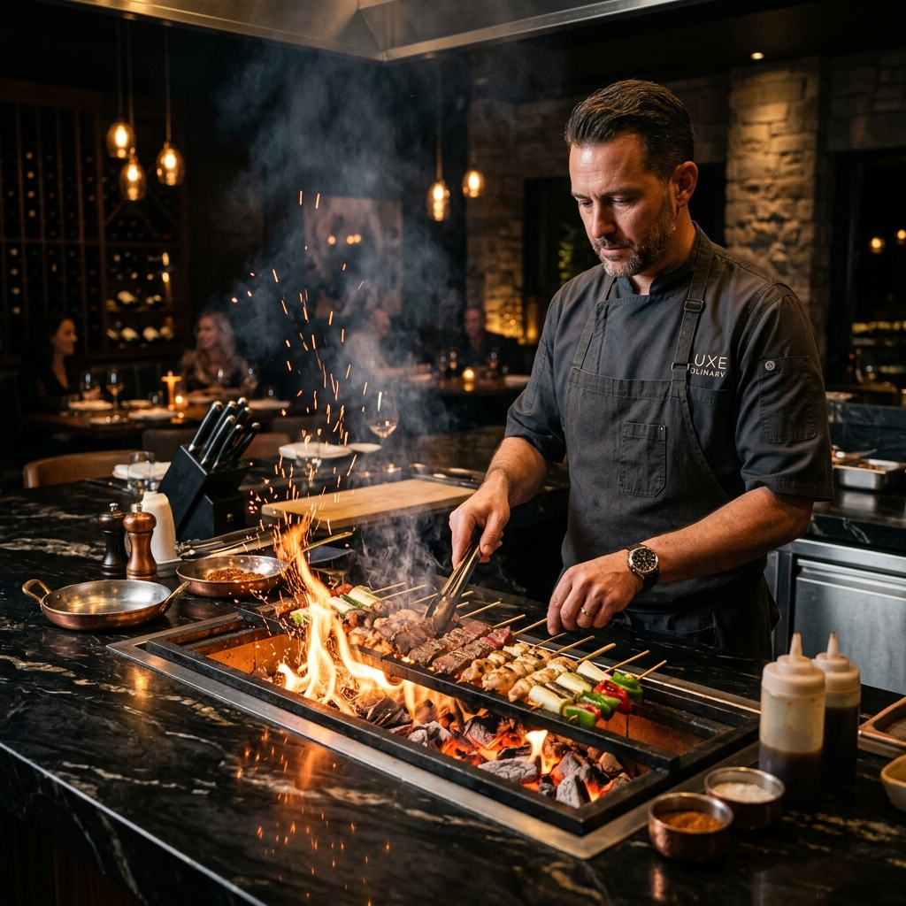
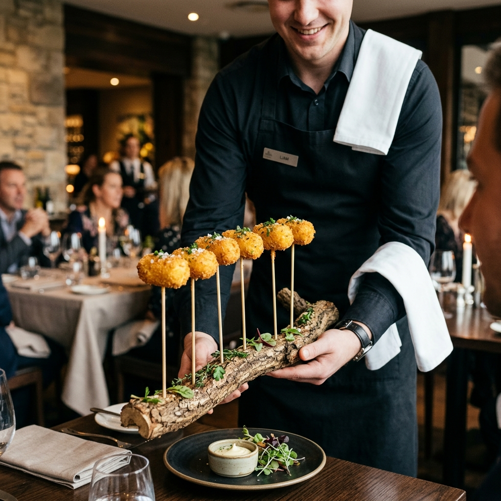
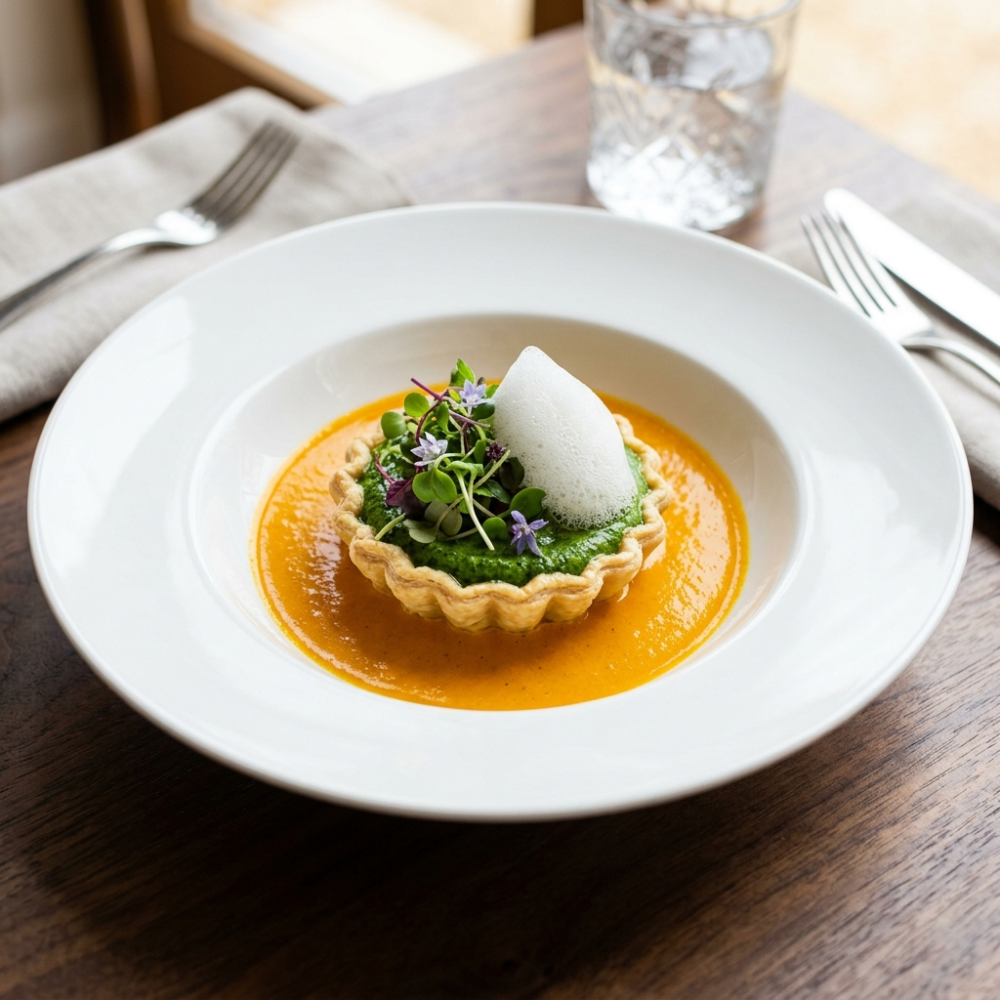
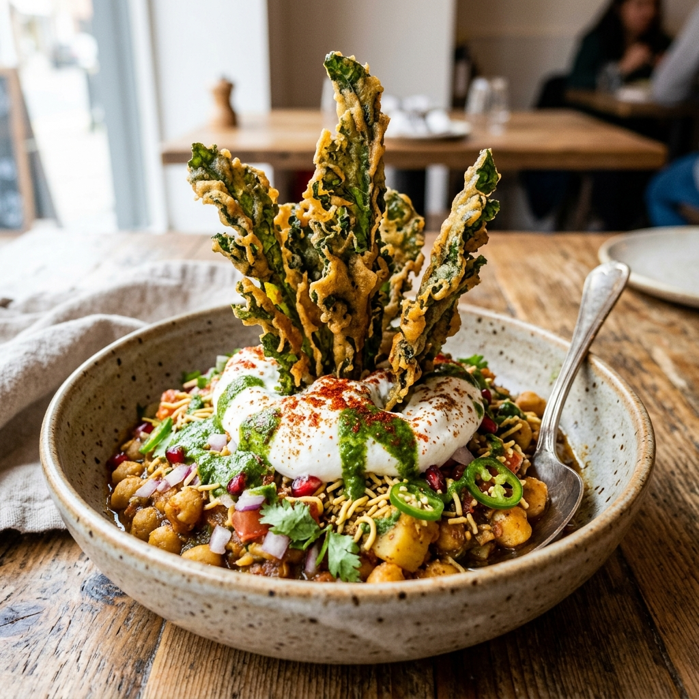
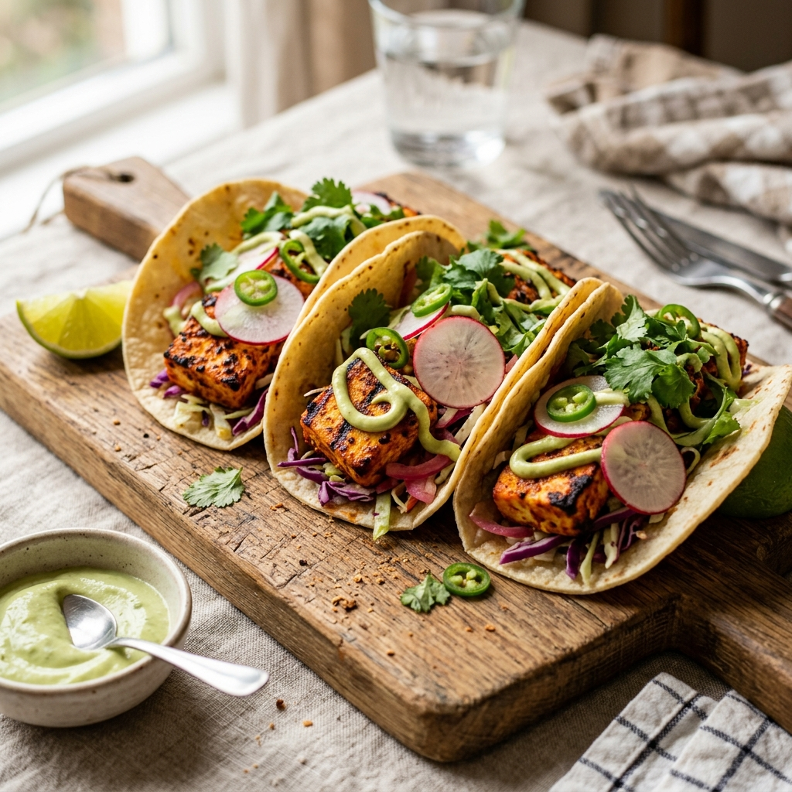
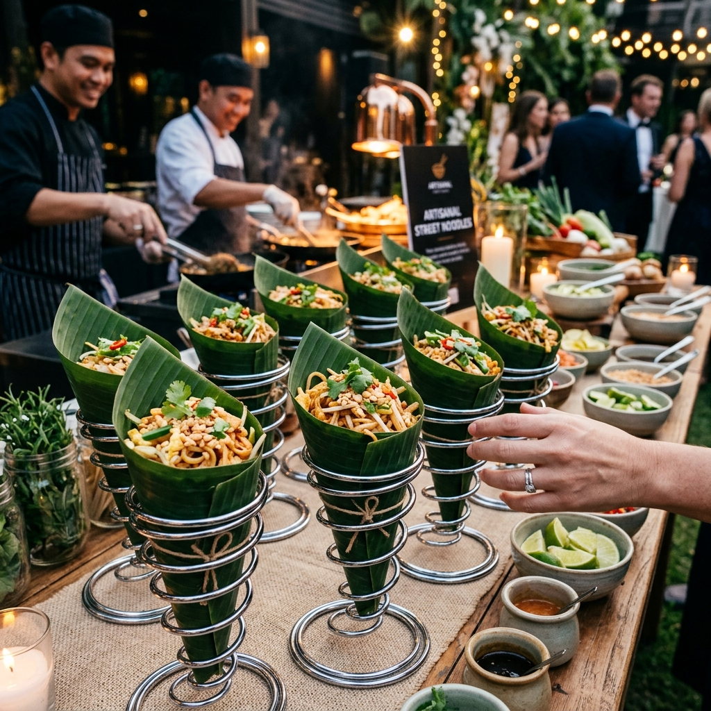

Curated Culinary Journeys
Select a destination below to explore the cultural storytelling, historical references, and Michelin-inspired menus crafted for each route.
Agra Fort Royal Route
Inspired by the royal spice galleys of the Mughal Empire. We bring the rich charcoal smoke, heritage flatbreads, and aromatic saffron stews of old Agra into a sleek, dark-slate visual theater.
Signature Plating
Galouti Kebabs with Truffle Foam & Saffron Sheermal

Banaras Ghats Chaat Route
Capturing the vibrant street culture along the Ganges. A sensory collection of sweet, tangy, and earthy flavors served in organic clay pots, finished with cardamom mist and rosewater bubbles.
Signature Plating
Deconstructed Tomato Chaat in custom Kulhads

Old Delhi Shutter Route
A tribute to the chaotic alleys of Chandni Chowk. We elevate Delhi's iconic street snacks into refined bites—stuffed gold-leaf kulchas, truffle ghee potato tarts, and aerated saffron cream.
Signature Plating
Truffle-Infused Chole Bhature Tarts with Pickle Emulsion

Mumbai Chowpatty Seafood
Reflecting the coastal, fast-paced energy of Bombay. We recreate beachside street favorites with luxury ingredients—spiced brioche butter buns, coastal lobster tails, and gold-dusted potato spheres.
Signature Plating
Spiced Lobster Pav Bhaji served on Brioche

Rajasthan Desert Forts
Inspired by the royal hunting banquets. Smoky spices, slow-roasted meats, and traditional desert beans are transformed into minimalist, high-impact plates with charcoal ash garnish.
Signature Plating
Wood-Smoked Laal Maas Croquettes with Cardamom Jus

Indore Sarafa Night Bazaar
Honoring the legendary midnight street food market. Sweet, savory, and spicy notes are layered in rapid succession—poha soufflés, mustard seed caviar, and saffron-sweet crispy jalebis.
Signature Plating
Sarafa Coconut Khopra Patties with Mint Spheres

Haridwar Sacred Temple Route
An exclusively vegetarian, pure, and aromatically complex journey. Focuses on stone-ground lentils, clarified butter (ghee) pastries, and saffron-sweet milk reductions.
Signature Plating
Saffron Rabdi Soufflé served in Clay Cups

Panipat Historical Grand Trunk
A journey through the historical corridor of battles and cross-cultural trade. Robust wheat crisp breads, slow-cooked heirloom beans, and wood-fired flatbreads served with cold herbal water flights.
Signature Plating
Artisanal Golgappa Flight with Botanical Infused Waters

Gujarat Coastal & Merchant
Celebrating the sweet-savory merchants of the western ports. We refine Gujarat's delicate steamed gram flour rolls, lentil cakes, and raw mustard temperings into graphic, geometric structures.
Signature Plating
Truffle Khandvi Rolls with Mustard Oil Droplets

Moradabad Metalwork Dal Route
Inspired by the famous brass metalworking city. An earthy, elegant mung lentil broth slow-simmered in heavy brass pots, served with crispy biscuit flatbreads, raw ginger hair, and house-pressed green chili oils.
Signature Plating
Moradabadi Dal served in hammered copper cups with Crispy Biscuits